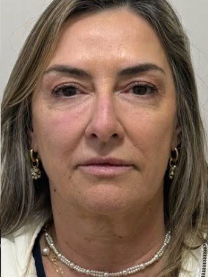
Foco principal
Harmonização facial
A leitura do rosto inteiro antes de qualquer aplicação: proporção, ângulos e o jeito que você se expressa. O plano combina técnicas em vez de repetir uma receita.
Osório · Rio Grande do Sul
Harmonização facial conduzida por uma biomédica que estuda o rosto antes de tocá-lo. Nada de padrão pronto: cada milímetro é decidido a partir da sua anatomia e da sua expressão — para que o resultado continue sendo você.
5,0 · 8 avaliações no Google
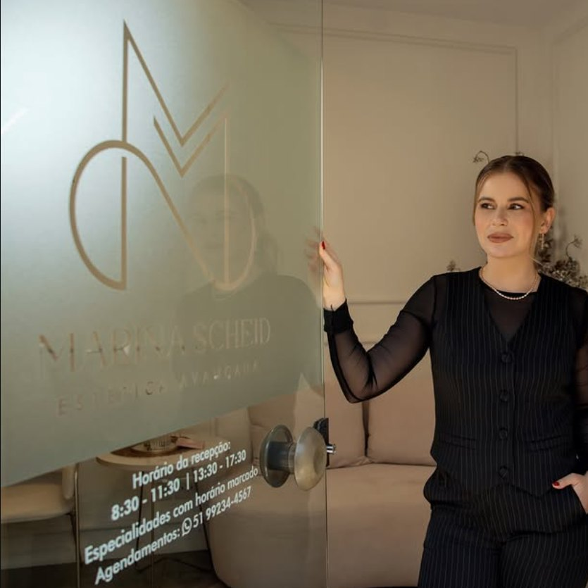
Expediente
Três passos, sem burocracia — do primeiro contato ao espelho.
Você manda uma mensagem contando o que te incomoda. Quem responde é a clínica — sem robô e sem formulário longo.
Na consulta, a Marina faz a avaliação facial completa e desenha o plano com você: o que faz sentido agora, o que pode esperar e o que ela não recomenda.
O procedimento é feito na própria clínica, com acompanhamento no pós. O objetivo nunca é mudar o rosto — é devolver o que o tempo tirou.
O que é feito na clínica — todos com avaliação individual antes.

A leitura do rosto inteiro antes de qualquer aplicação: proporção, ângulos e o jeito que você se expressa. O plano combina técnicas em vez de repetir uma receita.
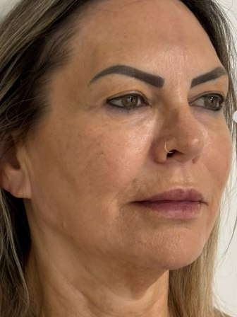
Suaviza linhas de expressão da testa, glabela e olhos — mantendo o movimento natural do rosto.
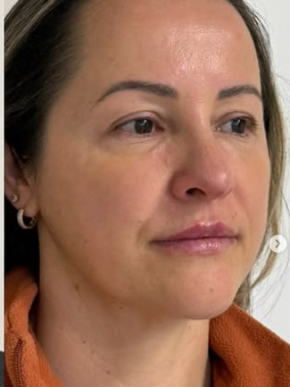
Mandíbula, olheiras e contorno. Ácido hialurônico aplicado em pontos definidos na avaliação — para estrutura, não para volume.
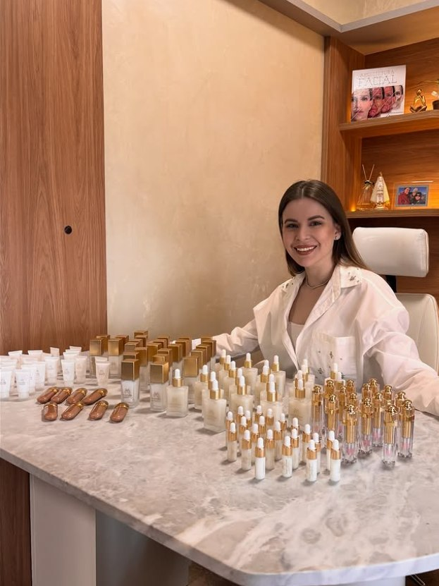
Escultura facial de dentro para fora: estimula a sua própria produção de colágeno, com resultado que aparece aos poucos.
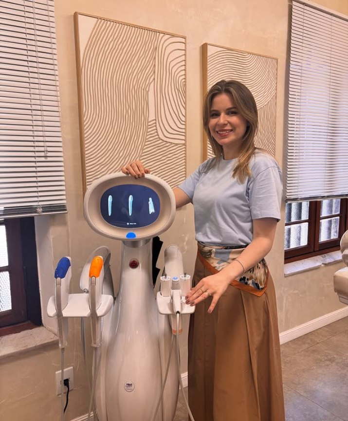
Tratamento de flacidez por ultrassom microfocado, sem cortes e sem afastamento da rotina.
Pacientes reais da clínica, fotografadas nas mesmas condições.
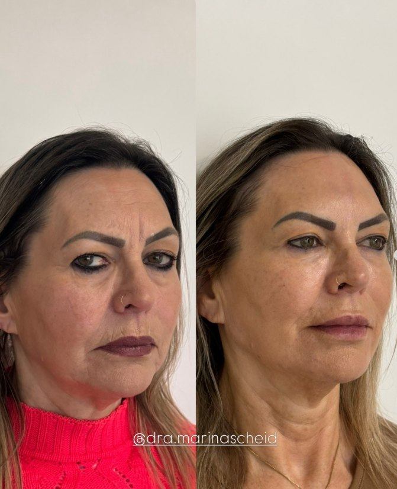
Antes Depois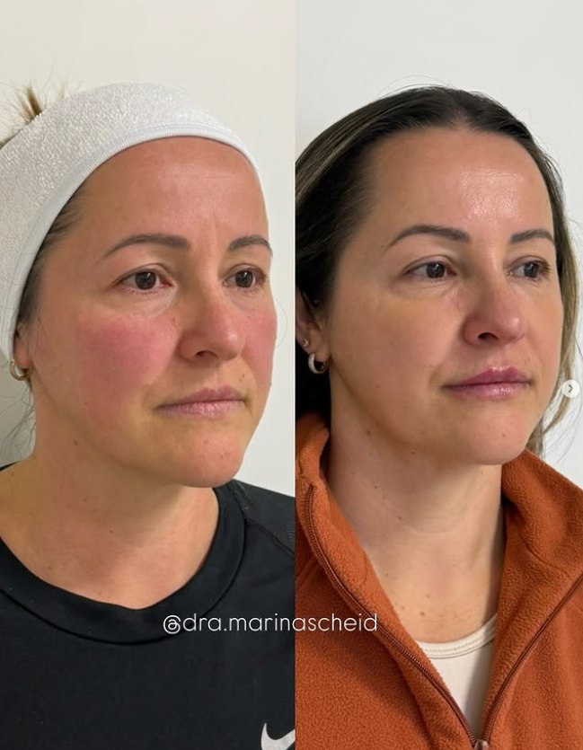
Antes Depois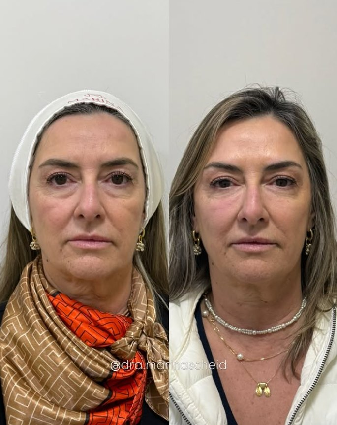
Antes DepoisResultados variam conforme a anatomia, a idade e a resposta individual de cada paciente. As imagens registram casos específicos e não representam promessa de resultado.
A verdadeira escultura facial é como uma obra de arte. Está na precisão e na delicadeza de cada detalhe.
Dra. Marina Scheid
A clínica é metade do trabalho. A outra metade é sala de aula.
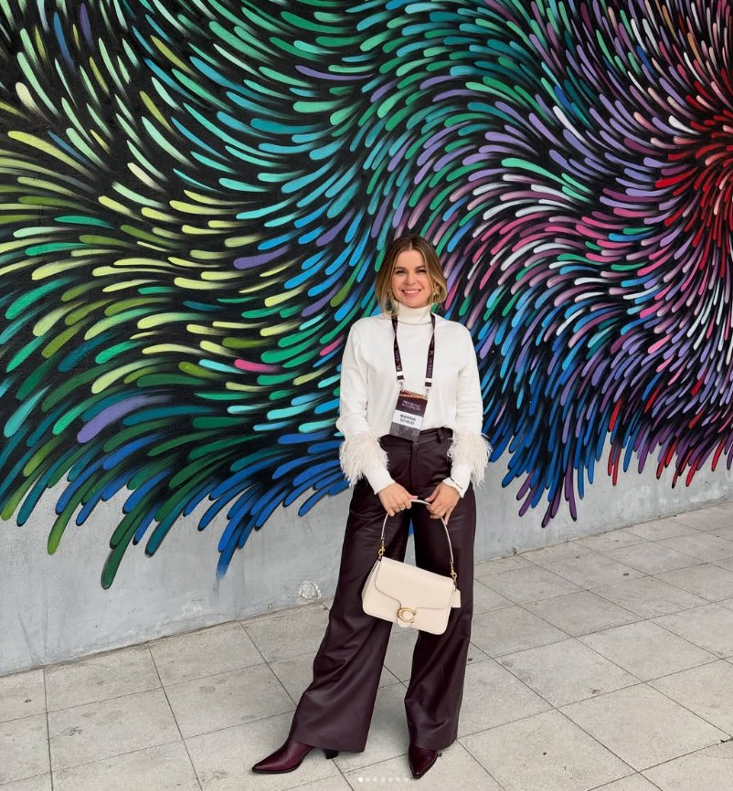
Além do atendimento, a Marina é professora na UNICNEC e leva à sala de aula o que aprendeu no mestrado pela UFRGS e na rotina clínica.
Ela também ministra cursos e palestras para profissionais e instituições — anatomia facial aplicada, técnica de aplicação, avaliação de casos e a construção de um resultado que respeita a expressão do paciente.
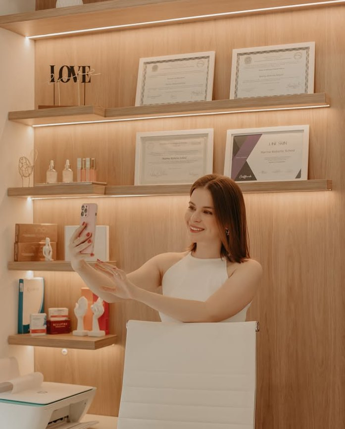
Marina Scheid é biomédica, mestre pela UFRGS e professora na UNICNEC. Foi a pesquisa que a levou à estética — e é ela que continua guiando a forma como atende: entender a estrutura antes de intervir nela.
Na clínica da R. Bento Gonçalves, em Osório, ela conduz pessoalmente cada avaliação. O plano de tratamento nasce da anatomia de quem está na cadeira, não de uma tendência da vez — e inclui, com frequência, dizer que um procedimento não é necessário.
Essa é a origem da frase que abre este site: valorizo a sua essência com arte e precisão. Arte pela leitura do conjunto; precisão pelo rigor de quem veio da bancada de pesquisa.
Dra. Marina ScheidBiomédica · Harmonização Facial · Osório/RS
A clínica mantém nota máxima entre as pacientes que avaliaram o atendimento no Google.
Ler no GoogleFiz meu último botox com a Marina, além da harmonização facial. Sem dúvidas o melhor botox que fiz até hoje. E estou com minha autoestima ótima depois dos procedimentos.
Naira Daiany Local Guide no Google
A Dra Marina é uma profissional zelosa pelo bem estar e resultados de suas clientes, além disso é uma querida. Adoro ser atendida na clínica.
Neiva Campos Aragon Avaliação no Google
Atendimento da Dra Marina é incrível, ela é uma ótimo profissional. Você que quer fazer procedimentos, e ficar ainda mais linda, ela é a pessoa certa para isso!! Parabéns pela sua entrega no atendimento e pela experiência incrível que passei durante o atendimento!! Além disso ela faz um primo acompanhamento pós procedimento! Grata por tudo!
Jéssica Lara Avaliação no Google
O desconforto é pequeno. Antes da aplicação é usado anestésico tópico e as agulhas são finas. A maioria das pacientes descreve como uma leve pressão — e volta à rotina no mesmo dia.
Depende do procedimento e do metabolismo de cada pessoa. Em média, a toxina botulínica se mantém por alguns meses e os preenchimentos por cerca de um ano ou mais; o bioestimulador age de forma gradual e prolongada. Na avaliação a Marina explica o tempo esperado para o seu caso.
Esse é justamente o ponto de partida do trabalho. O plano é desenhado a partir da sua anatomia e da sua expressão, em doses pensadas para o conjunto do rosto. Se o pedido levar a um resultado artificial, ela vai dizer — e propor outro caminho.
Nas primeiras 24 a 48 horas: evitar exercício físico intenso, sol direto, sauna e deitar de bruços, além de não massagear a região aplicada. Você recebe as orientações por escrito e pode falar com a clínica pelo WhatsApp durante todo o pós.
O preenchimento já mostra mudança na hora, com o efeito final depois que o inchaço passa. A toxina botulínica aparece ao longo dos primeiros dias. Já o bioestimulador de colágeno é progressivo: o rosto vai mudando ao longo de semanas, o que torna o resultado mais discreto para quem olha de fora.